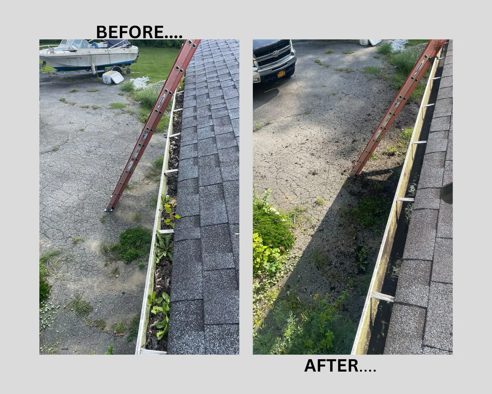
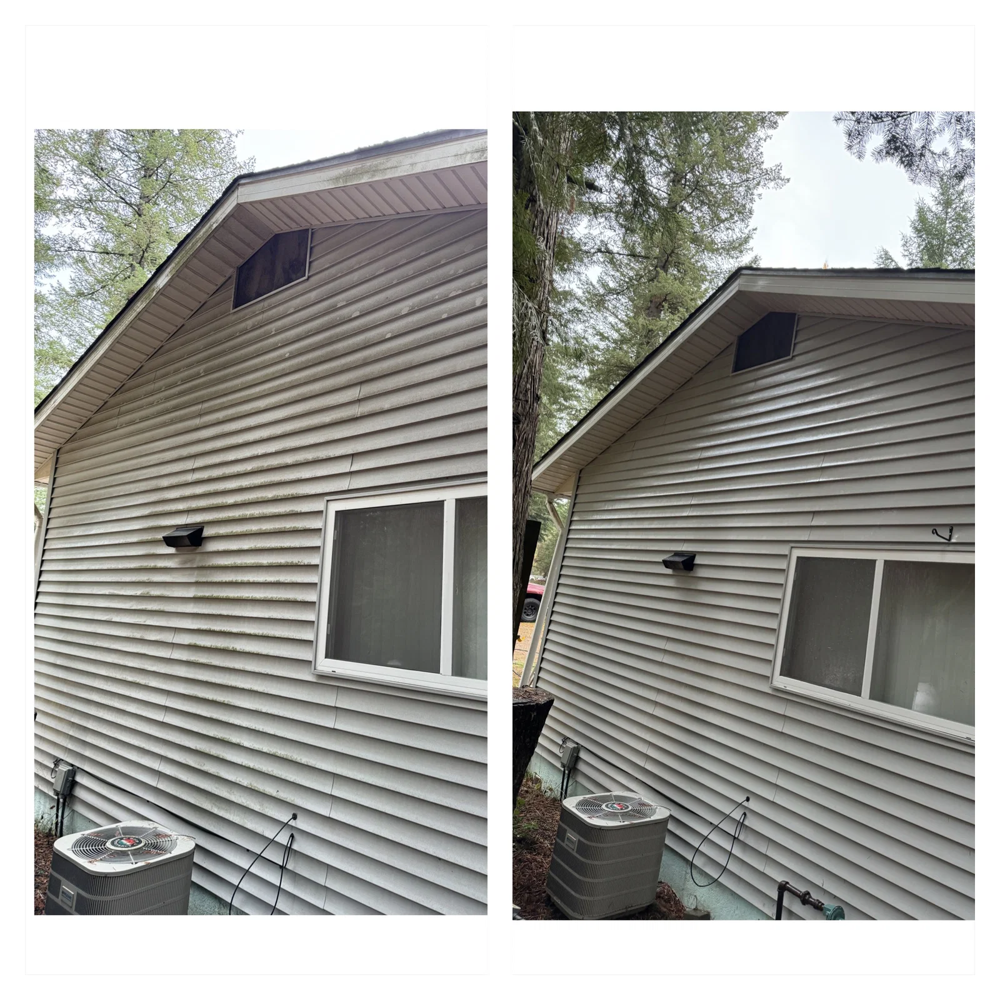
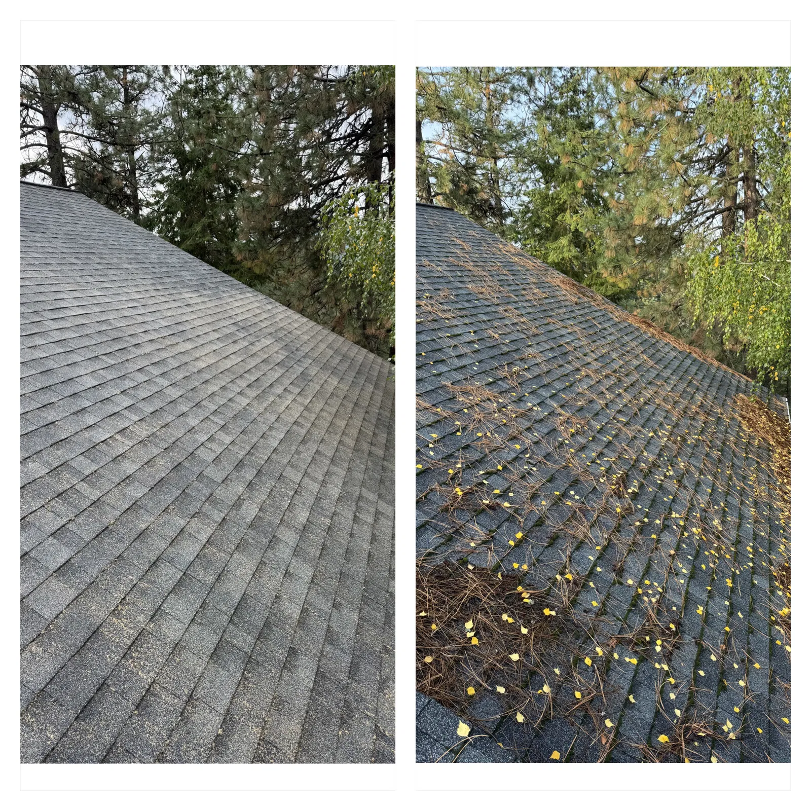
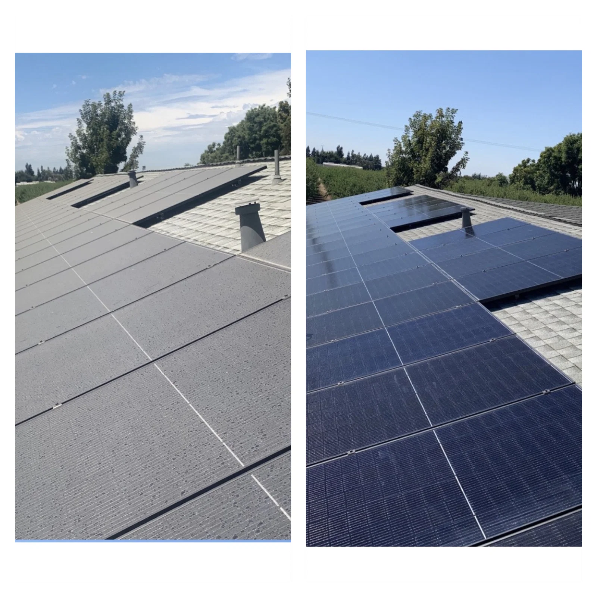

Gutter Cleaning
Overflowing gutters collect leaves, dirt, and debris quickly. Regular cleanouts help water flow properly and protect your roofline.
What we do
From exterior cleaning to small repairs and seasonal upkeep, these services are designed to keep your home looking great and running smoothly.

Overflowing gutters collect leaves, dirt, and debris quickly. Regular cleanouts help water flow properly and protect your roofline.

Siding naturally builds up grime over time. A careful wash restores a brighter, cleaner look to your home.

Leaves and debris on the roof can affect both appearance and drainage. Cleanup helps maintain a cleaner, healthier surface.

Dust and buildup can dull the look of solar panels. Cleaning keeps them looking sharp and well-maintained.
Work directly with the person doing the job. Clear communication and consistent quality come standard.
Ongoing maintenance keeps your home in better shape year-round and prevents larger issues from building up.